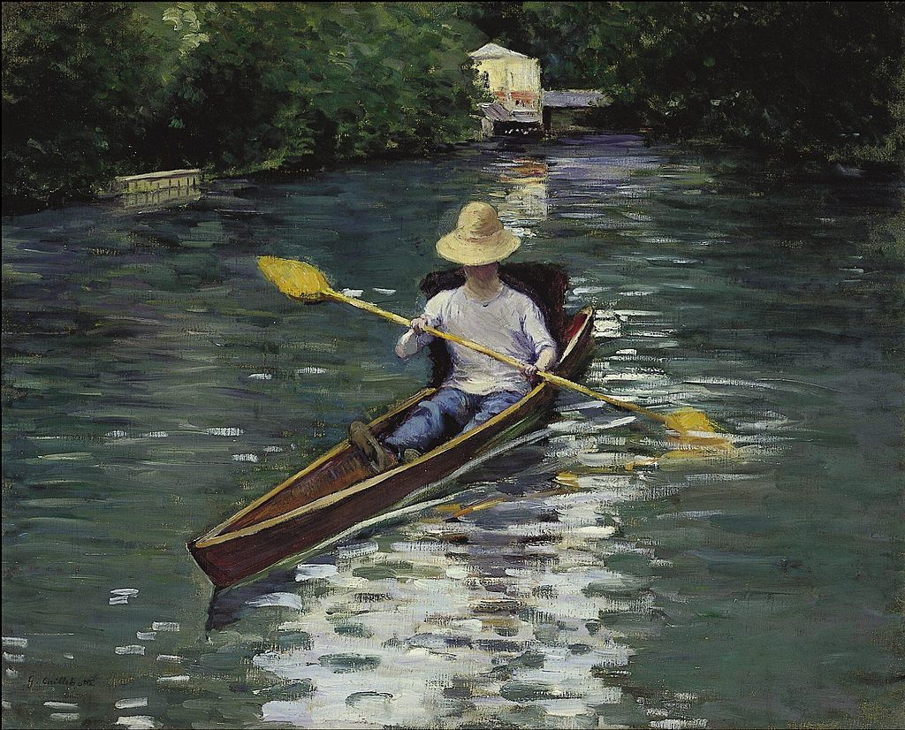

<head>
<meta charset="UTF-8" />
<meta name="keywords" content="drawing, painting" />
<meta name="description" content="drawings by Sunjy" />
<title>Sunjy</title>
<link rel="shortcut icon" type="image/x-icon" href="../../mImages/mCommon/favicon.ico" media="screen" />
<link rel="stylesheet" type="text/css" href="../../mCsses/mCommon/mCssA.css" />
<link rel="stylesheet" type="text/css" href="../../mCsses/mCommon/mCssB.css" />
<link rel="stylesheet" type="text/css" href="../../mCsses/mCommon/mCssC.css" />
<link rel="stylesheet" type="text/css" href="../../mCsses/mCommon/mCssD.css" />
<link rel="stylesheet" type="text/css" href="../../mCsses/mContent/mCssA.css" />
<link rel="stylesheet" type="text/css" href="../../mCsses/mContent/mCssB.css" />
<link rel="stylesheet" type="text/css" href="../../mCsses/mContent/mCssC.css" />
<link rel="stylesheet" type="text/css" href="../../mCsses/mContent/mCssD.css" />
</head>
<script type="text/javascript" src="../../mScripts/mContent/mContentAA.js" /></script>
<script type="text/javascript" src="../../mScripts/mContent/mContentAB.js" /></script>
<script type="text/javascript" src="../../mScripts/mContent/mContentAC.js" /></script>
<script type="text/javascript" src="../../mScripts/mContent/mContentAD.js" /></script>
<script type="text/javascript"></script> 
<script type="text/javascript">
document.write('<div class="mImgAbsolute"></div>');
/*
document.write('<p class="mFontSizeBColor" />From a white paper...</p>');
document.write('<table class="center"><tr><td>');
document.write('');
document.write('</td></tr></table>');
*/
</script>


<script type="text/javascript">
document.write('<p class="mFontSizeBColor" />Canoe on the Yerres River</p>');
document.write('<p class="mFontSizeSColor" />“Canoe on the Yerres River” by Gustave Caillebotte depicts a one-person skiff being paddled along the Yerres River.<br><br>In 1860 the father of Gustave Caillebotte bought an estate on the banks of the river Yerres, and Gustave Caillebotte painted around 80 paintings there until the sale of the estate in 1879.<br><br>The town now owns the estate and its magnificent garden and is now open to visitors.<br><br>Yerres is a southeastern suburb of Paris, France. It is located 18.3 km (11.4 mi) from the center of Paris. The town of  Yerres extends on both sides of the valley through which flows the river Yerres.<br></p>');
document.write('<table class="center" /><tr><td>');
document.write('<br>In 1860 the father of Gustave Caillebotte bought an estate on the banks of the river Yerres, and Gustave Caillebotte painted around 80 paintings there until the sale of the estate in 1879.<br><br>The town now owns the estate and its magnificent garden and is now open to visitors.<br><br>Yerres is a southeastern suburb of Paris, France. It is located 18.3 km (11.4 mi) from the center of Paris. The town of  Yerres extends on both sides of the valley through which flows the river Yerres.<br>" />');
document.write('</td></tr></table>');
</script>


